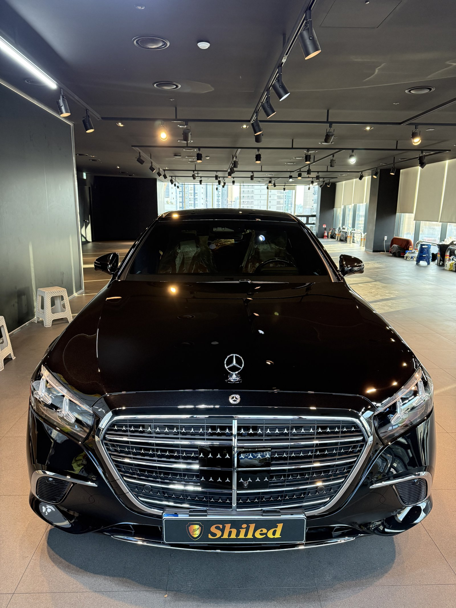
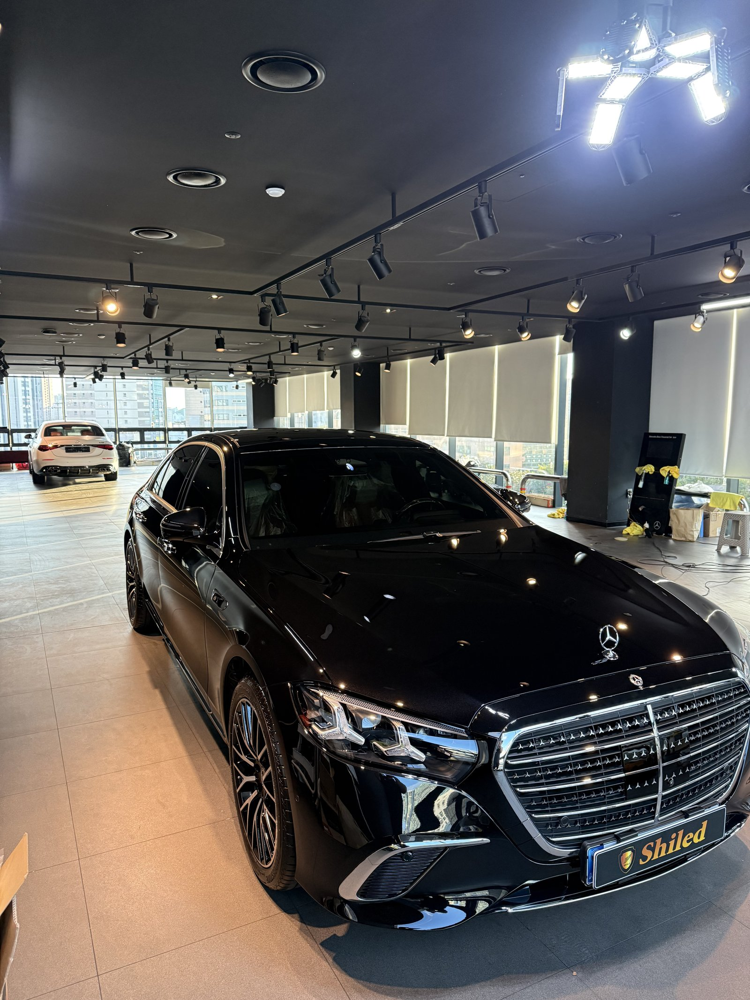
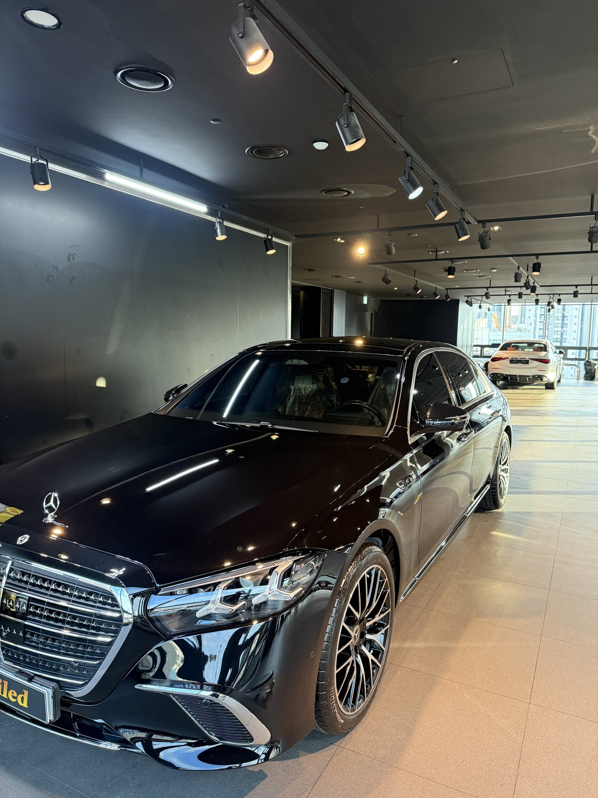
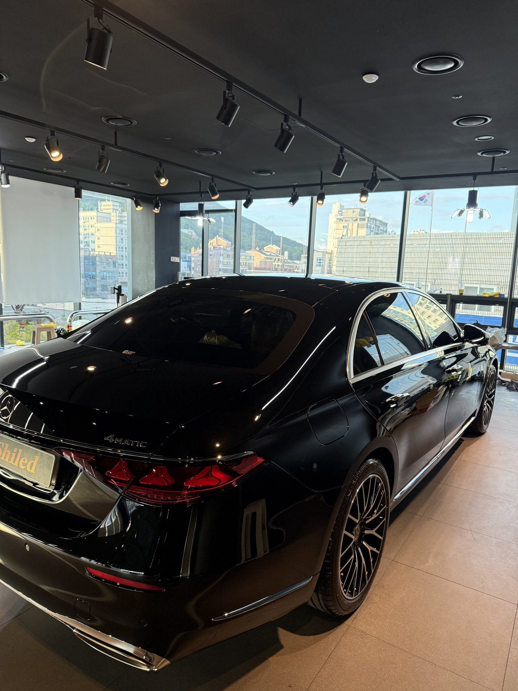
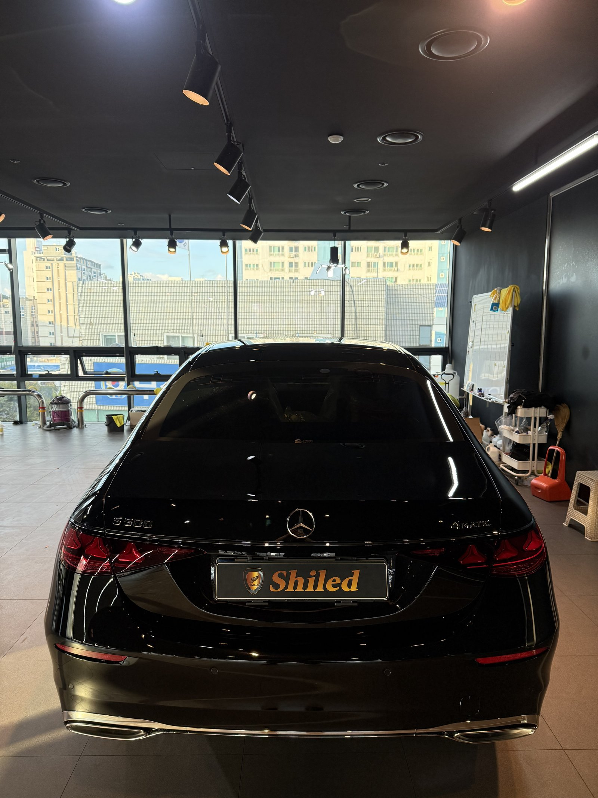
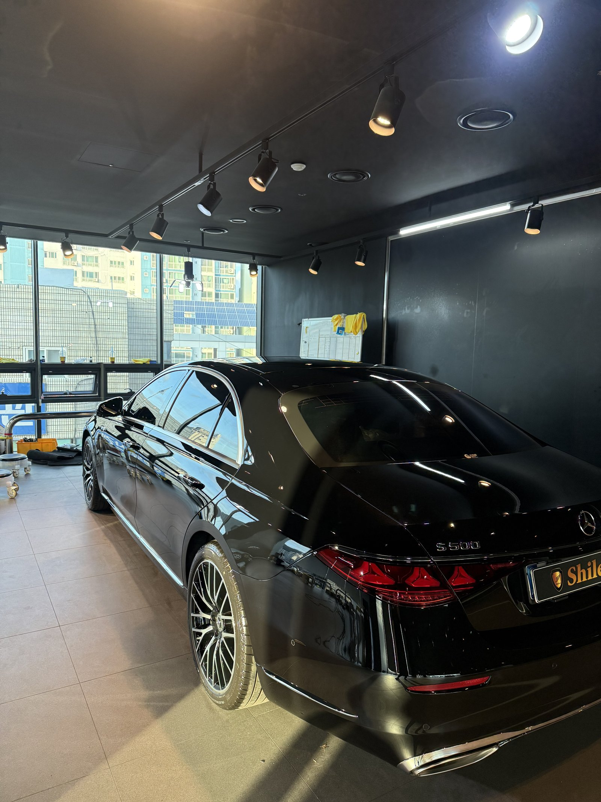
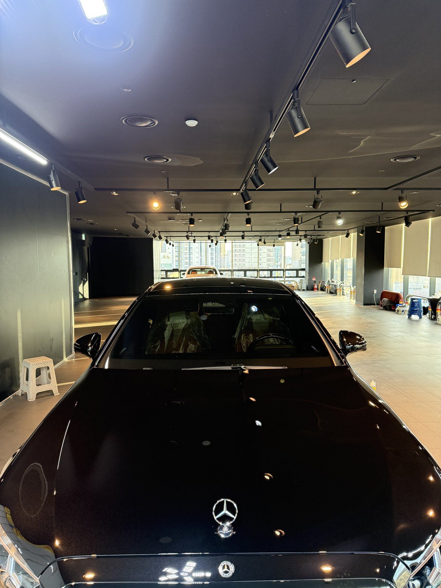
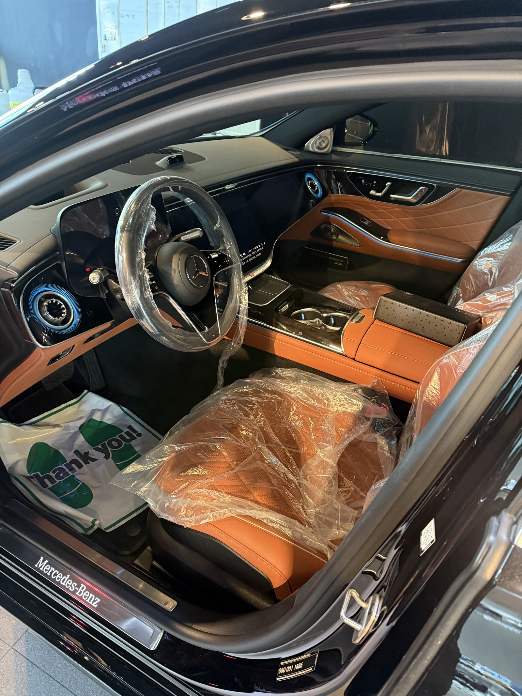
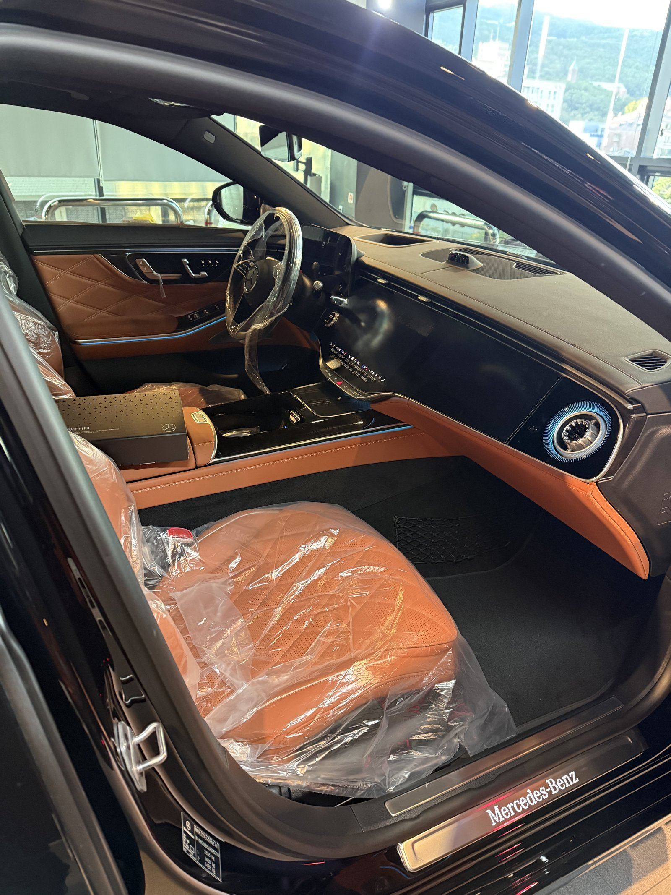
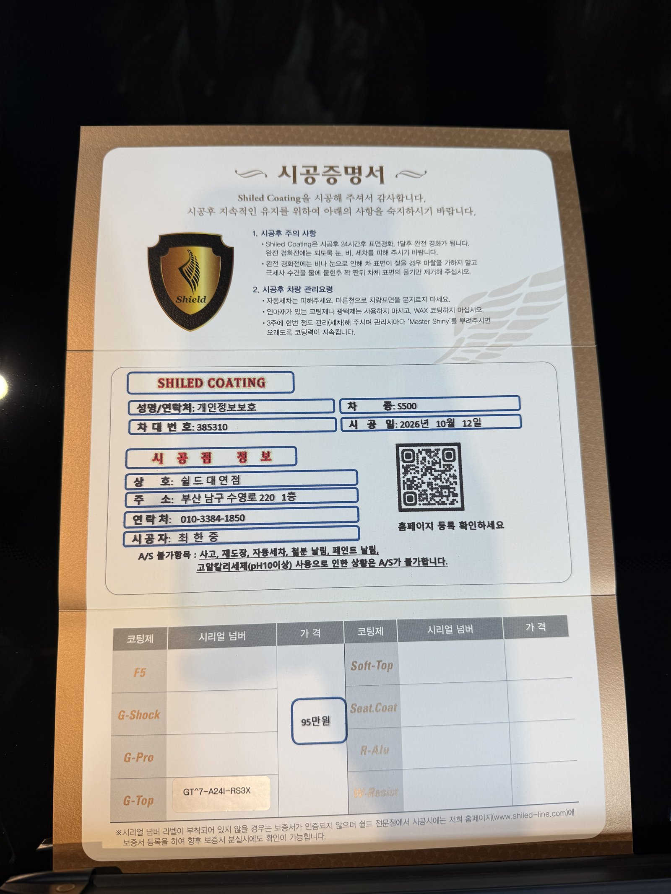

벤츠 S500, 검정 신차입니다.
실내는 오렌지 톤 가죽에 블루 앰비언트 조명이 들어간 사양입니다.
검정 S클래스는 보통 F5를 많이 고르시는데, 이 차는 G-TOP으로 진행했습니다.
부산 유리막코팅 작업의 S500 기록입니다.

검정 S500인데 왜 G-TOP인가요?
관리 방식에 맞춘 선택입니다.
F5는 색감 깊이, G-TOP은 발수·방오에 특화된 코팅입니다.
검정은 광의 깊이도 중요하지만, 물 자국과 먼지가 가장 먼저 티 나는 색이기도 합니다.
세차 주기가 길거나 야외 주차가 잦으면 오염이 덜 붙는 쪽이 실제 체감이 큽니다.


긴 차체는 어디를 보나요?
S클래스는 앞에서 뒤까지 한 줄로 이어지는 캐릭터 라인이 깁니다.
천장 트랙 조명이 그 라인을 따라 끊김 없이 흐르는지 확인했습니다.
이번 부산 유리막코팅도 대표가 직접 개발·제조한 G-TOP으로 마무리했습니다.


기술자의 팁
발수 코팅이 올라간 검정 차는 비 온 뒤 그냥 두면 물방울이 렌즈처럼 맺혔다 마르며 자국을 남깁니다. 비가 그치면 가볍게 물 세차 후 물기만 걷어 주셔도 충분합니다.


오렌지 실내는 출고 전 그대로 지킵니다
실내는 오렌지 톤 가죽 시트에 보호 비닐이 씌워진 신차 상태 그대로입니다.
인도 전에 대표가 직접 최종 상태를 확인합니다.


시공증명서를 함께 드립니다
모든 시공 차량에 시공증명서를 드립니다.
차종·시공일·코팅제 시리얼 번호가 적혀 있고, 홈페이지에 등록해 보증을 받으실 수 있습니다. 이 차는 G-TOP으로 기록돼 있습니다.

차종·시공일·코팅제 시리얼이 기재된 시공증명서
자주 묻는 질문
Q. 검정 차에 G-TOP을 써도 되나요?
A. 됩니다. 색감 깊이를 우선하면 F5, 물 자국·먼지 관리 편의를 우선하면 G-TOP이 맞습니다. 이 S500은 G-TOP으로 진행했습니다.
Q. 발수 코팅 차는 비 온 뒤 어떻게 하나요?
A. 물방울이 맺힌 채로 마르면 자국이 남을 수 있으니, 가볍게 물 세차 후 물기만 걷어 주시면 됩니다.
Q. 왜 출고 전에 코팅하나요?
A. 도장면이 가장 깨끗할 때 올린 코팅이 가장 오래갑니다. 운행과 세차로 잔기스가 생기기 전에 입혀두는 것이 핵심입니다.
Q. 코팅 후 세차는 언제부터 하나요?
A. 코팅이 자리 잡을 시간이 필요하므로 시공 직후 강한 세차는 피하는 것이 좋습니다. 정확한 시점은 인도할 때 안내해 드립니다.
Q. 쉴드광택 위치와 예약은 어떻게 하나요?
A. 부산 남구 유엔로220 1F 쉴드광택입니다. 예약·상담은 010-3384-1850, 대표 최한중이 직접 상담하고 책임 시공합니다.
새 차일수록 시작점이 다릅니다. 가장 깨끗할 때 입혀두십시오.
제품을 직접 만드는 사람이 직접 시공합니다.
부산에서 신차 유리막코팅을 고민 중이시면 편하게 연락 주십시오.
어떤 차를 타냐보다 어떻게 타냐가 중요합니다~!
시공 중에는 전화를 받지 못할 때가 많습니다.
카카오톡으로 차종과 원하시는 시공을 남겨주시면 확인 후 답변드립니다.
쉴드광택 · 부산 남구 유엔로220 1F · 대표 최한중